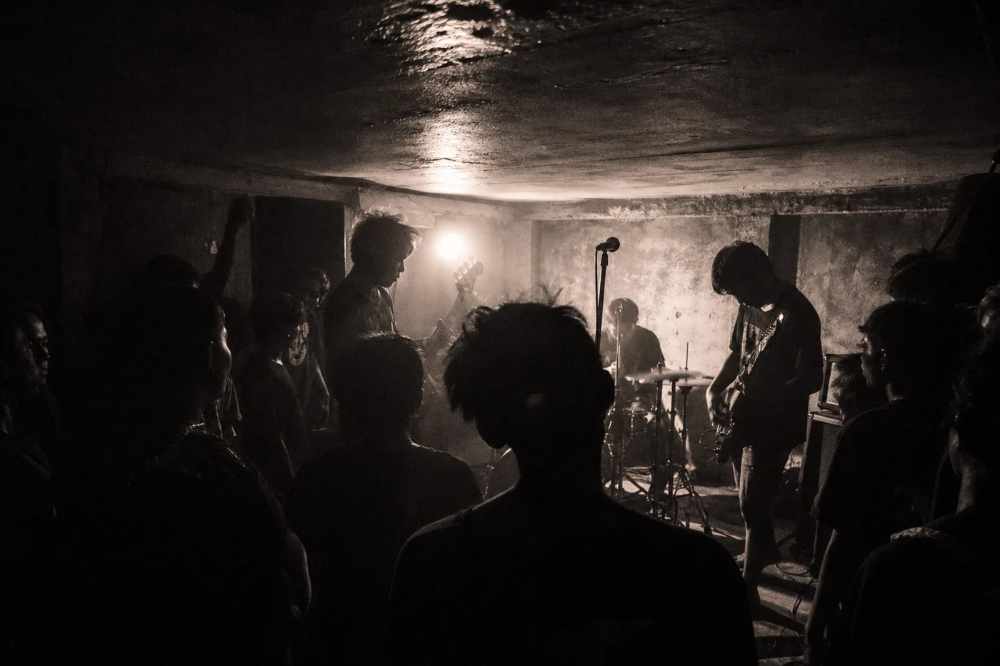

Verses Beneath a Dying Sky
Ezalor — Jakarta
01 / 06SEBUAH ARSIP UNTUK YANG TERLUPAKAN
Kaset yang berpindah tangan. Gig yang tinggal di ingatan. Nama-nama yang nyaris tak tercatat. Di sini, jejaknya kita jaga bersama.

RILISAN
TERARSIP
ARTIS
TERARSIP
KOTA
DI INDEKS SCENE
GULIR UNTUK
MENJELAJAHI ↓
02 / 06BARU DARI RAK ARSIP
Setiap rilisan adalah pintu masuk ke orang, tempat, dan waktu di belakangnya.
Ezalor — Jakarta
Head Up — Pandaan
Sacred — Pandaan
Eye Impact — Pandaan

DOKUMENTASI VISUAL ARSIPTENTANG ARSIPKENAPA INI PENTING
Sebuah sampul kaset menyimpan lebih dari daftar lagu. Ada tahun yang samar, kota yang membentuknya, dan orang-orang yang menjaga salinannya tetap hidup.
Noiseantara dibangun untuk merangkai potongan itu—dengan sumber, dengan kredit, dan tanpa mengarang bagian yang belum kita tahu.
CARA KAMI BEKERJA03 / 06SATU SCENE, BANYAK KOTA
Setiap kota punya frekuensinya sendiri. Pilih satu, lalu ikuti jejak rilisan dan nama-nama di sekitarnya.
04 / 06LEBIH DARI DISKOGRAFI
Di luar rak rilisan, jejak scene hadir di poster yang robek dan halaman yang berpindah tangan.
05 / 06CERITA DI BALIK SUARA
Catatan, pertanyaan, dan kisah di balik arsip yang terus tumbuh.
06 / 06PILIH JALANMU SENDIRI
ARSIP INI TAK DIBANGUN SENDIRIAN
Satu foto sampul, satu nama, satu ingatan—semuanya bisa jadi awal.